Designing, implementing, and evaluating a functional Storage Area Network (SAN) using consumer-grade hardware and open-source tools.
01. Context & Problem Statement
During my first personal project meeting, one of my mentors explicitly stated that a standard NAS (Network Attached Storage) project would not be sufficiently challenging for Semester 6. A NAS operates at the file level, introducing overhead that makes it not optimal for enterprise virtualization workloads.
The Challenge: How can I design, implement, and validate a functional SAN using only hardware I have at home, while proving its superiority over NAS in performance?
02. Hardware Main Components
The environment was built to simulate a realistic "free" enterprise scenario, reutilizing devices I already owned.
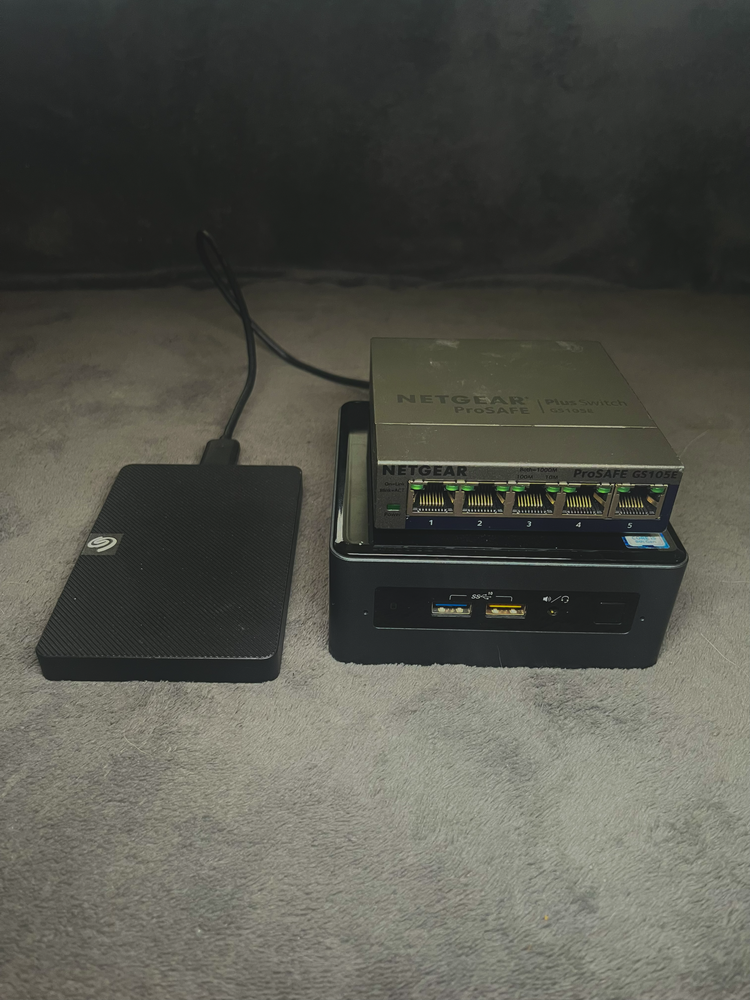
| Device | Role | Configuration |
|---|---|---|
| Intel NUC | iSCSI Target | i5, 8GB RAM, Ubuntu Server 24.04 |
| 1TB HDD | Physical Storage | USB 3.0 Expansion Drive |
| Netgear GS105E | Managed Switch | VLAN 10 (Ports 2-4) / VLAN 1 (Ports 1,5) |
| Uni Laptop | Client (Initiator) | Windows 11, Microsoft iSCSI Initiator |

03. The Setup: Starting clean
I started by restoring my Intel NUC to factory defaults. It had been used as a home lab before, but I needed to start from zero to document the process accurately.
Hardware Upgrade
I swapped my old Linksys PoE+ switch for a Netgear GS105E. This was beneficial to me because it supports 802.1Q VLAN tagging, which allows me to segment the network properly later.
Fresh Install & Mounting
I installed Ubuntu Server 24.04.3 LTS via a bootable USB created with Rufus. During installation, I set the static IP to 192.168.2.200. After booting, I plugged in the 1TB drive.
I ran sudo fdisk -l /dev/sda and saw it had an old NTFS partition. I decided to wipe it.
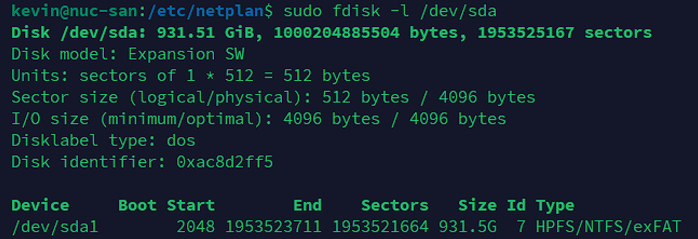
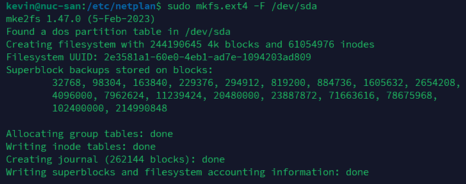
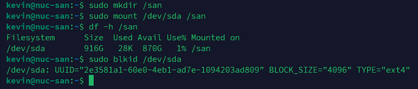
04. iSCSI Implementation
Installing the iSCSI Target
Now, I have to install the iSCSI Target into the NUC. targetcli normally saves its configurations in /etc/target/saveconfig.json.
With this, the service will be running and the configs will be saved.
Creating the 100 GB LUN
After that, we have to create the 100 GB LUN, that’s where the virtual disk of the SAN will serve the other devices. A LUN is a Logical Unit Number, the block device the iSCSI presents.
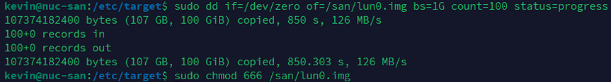
Here we verify that it is working:
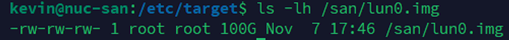
Target Configuration
I utilized the Linux-IO (LIO) stack via targetcli-fb to map this new file as a storage object.
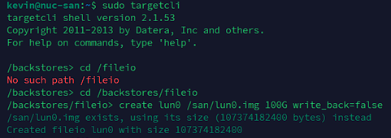
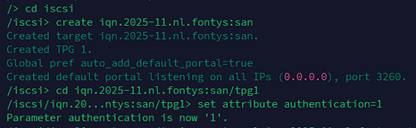
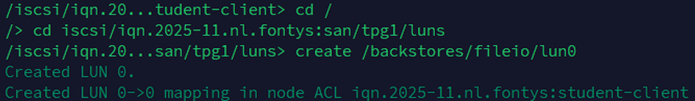
05. Chap Problems & Solutions
This was the hardest part of the implementation. Enterprise storage requires authentication, so I attempted to enable Mutual CHAP (where both client and server verify each other).
The Failure: My initial attempts failed. Windows 11 refused to connect. I discovered two issues:
- My password was 21 characters long (too long for some initiators).
- Windows 11 has a known bug with Mutual CHAP in the Microsoft Initiator.
The Fix: I switched to Unidirectional CHAP and shortened the password to 12 characters.
Phase 1: Configuration on the NUC
Win + R, type iscsicpl, and check the Configuration tab to copy the exact Initiator Name.
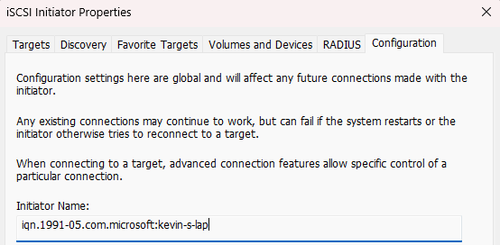
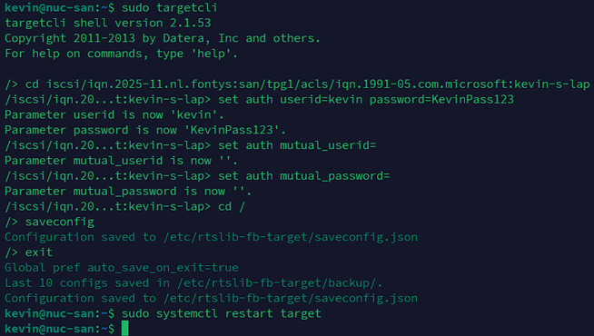
Phase 2: Connect the Windows Client
With the Target ready, I went back to the iSCSI Initiator (`iscsicpl`). I navigated to the Discovery tab, clicked Discover Portal, and added the IP address of the NUC (`192.168.2.200`) leaving the port as default.
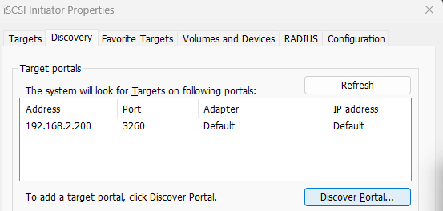
After discovery, I went to the Targets tab, selected my SAN, and clicked Connect. I opened the Advanced settings and checked Enable CHAP log on to input my credentials.
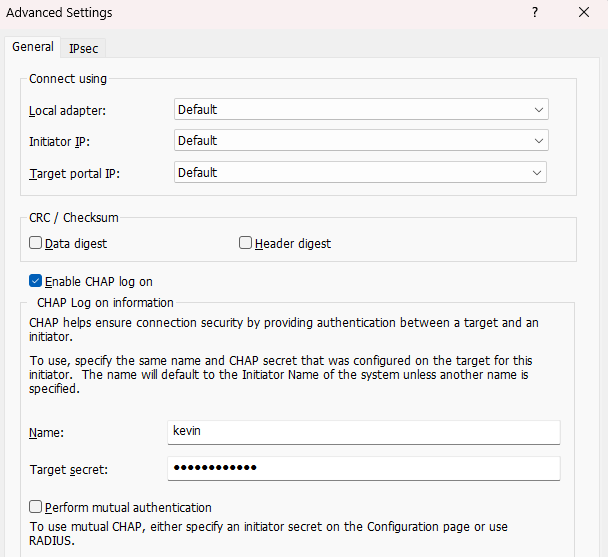
Phase 3: Initializing the Disk
Once the connection was successful, I pressed Win + R and typed diskmgmt.msc to open Disk Management. The unformatted disk appeared immediately as "Disk 1".
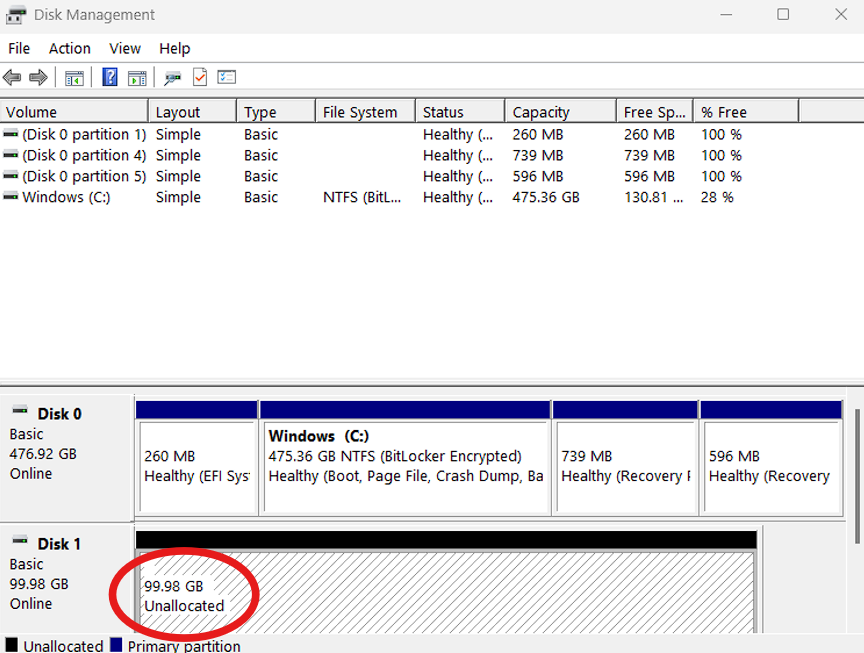
I initialized it as GPT and formatted it as NTFS (Volume Label: SAN-100GB).
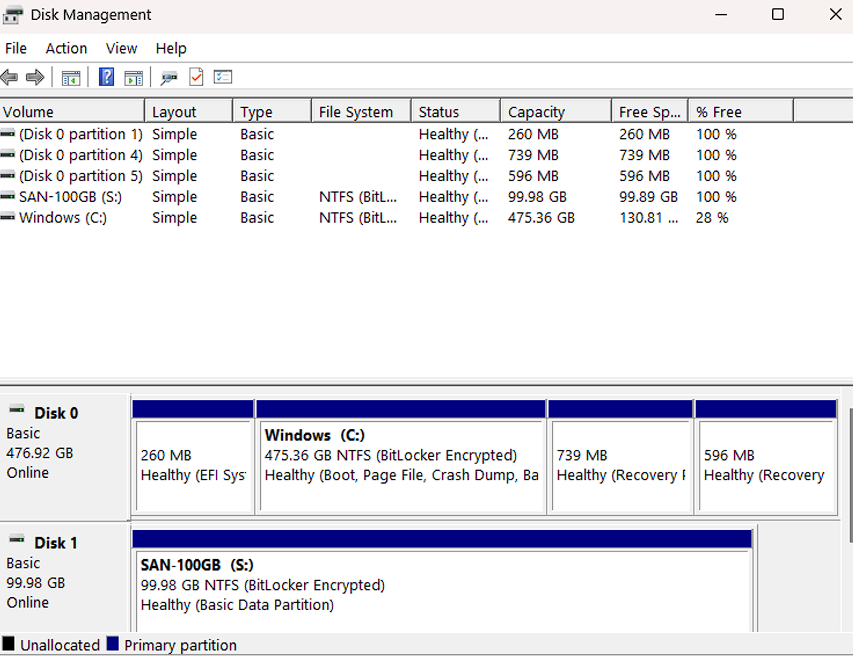
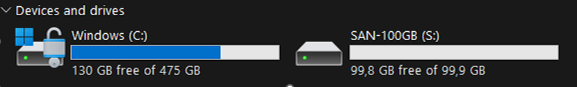
06. VLAN Security
Authentication was not enough for me. I wanted to add a network isolation. I accessed the Netgear switch interface (found at 192.168.2.4) and configured 802.1Q Advanced VLANs.
- VLAN 1 (Home): Ports 1 & 5 (Router Uplink).
- VLAN 10 (SAN): Ports 2, 3, 4 (NUC & Laptops).

However, setting membership isn't enough. I also had to configure the PVID (Port VLAN ID). This ensures that any traffic coming from my laptop (which doesn't send VLAN tags) is automatically tagged as VLAN 10 by the switch.
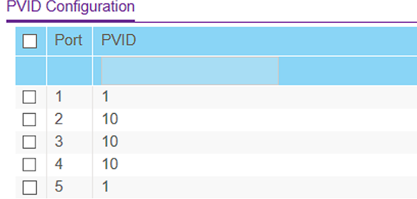
Result: When my laptop is on Wi-Fi, the SAN IP 192.168.2.200 is unreachable. It only becomes visible when physically plugged into ports 2-4. This effectively "air-gaps" the storage traffic from the home network.
07. Benchmarks
I ran CrystalDiskMark 9.0.1 (4GiB test file, 5 runs) to compare the iSCSI SAN against a traditional NAS setup running on a separate NUC with an internal SATA HDD.
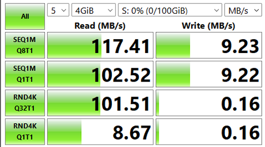
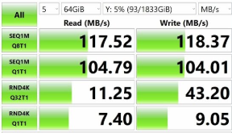
| Metric | iSCSI SAN (Block) | NAS (File) | Analysis |
|---|---|---|---|
| Seq. Read (Q8T1) | 117.41 MB/s | 117.52 MB/s | Tie: Both saturated the Gigabit Ethernet link. |
| Random Read (4K) | 101.51 MB/s | 11.25 MB/s | SAN Wins (~9x): Massive advantage for VM booting. |
| Random Write | 0.16 MB/s | 9.05 MB/s | NAS Wins: Internal SATA vs USB Overhead. |
Detailed Analysis
The NAS looks better on the sequential write because it uses internal SATA. On the USB HDD (used for the SAN), there is a translation layer which makes the sequential write of the HDD slower.
The good thing is, the random read is 9 times faster on the SAN. That’s the block-level advantage: Windows can optimize I/O way better with iSCSI than with SMB/NFS, making it far superior for latency sensitive workloads like virtualization in Proxmox, Hyper-v or VMware
08. Future Roadmap
The current implementation is functional and secure for Windows clients. But, to fully validate the SAN's versatility as an enterprise solution, the following steps are planned as a private continuation of this project.: